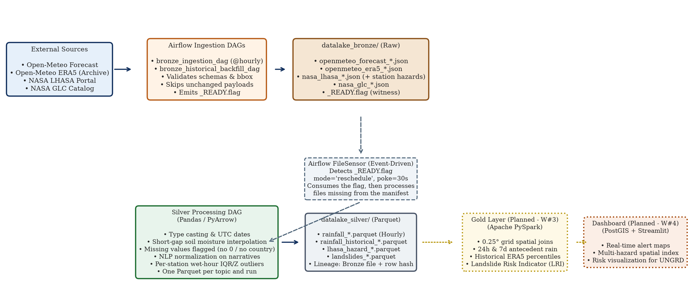
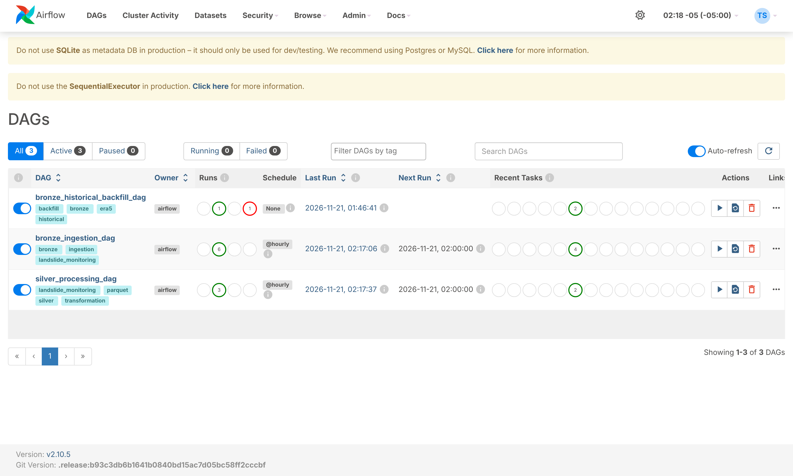
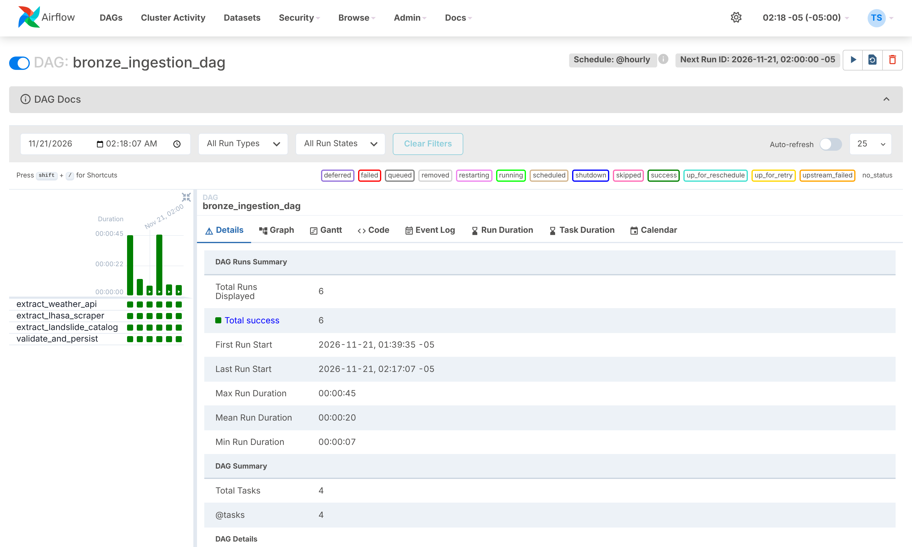
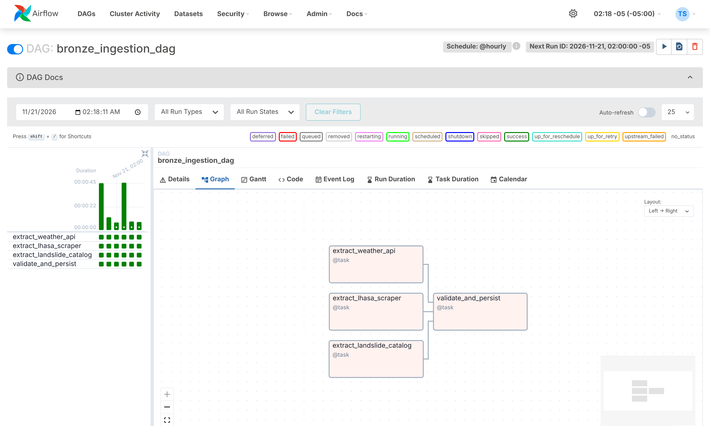
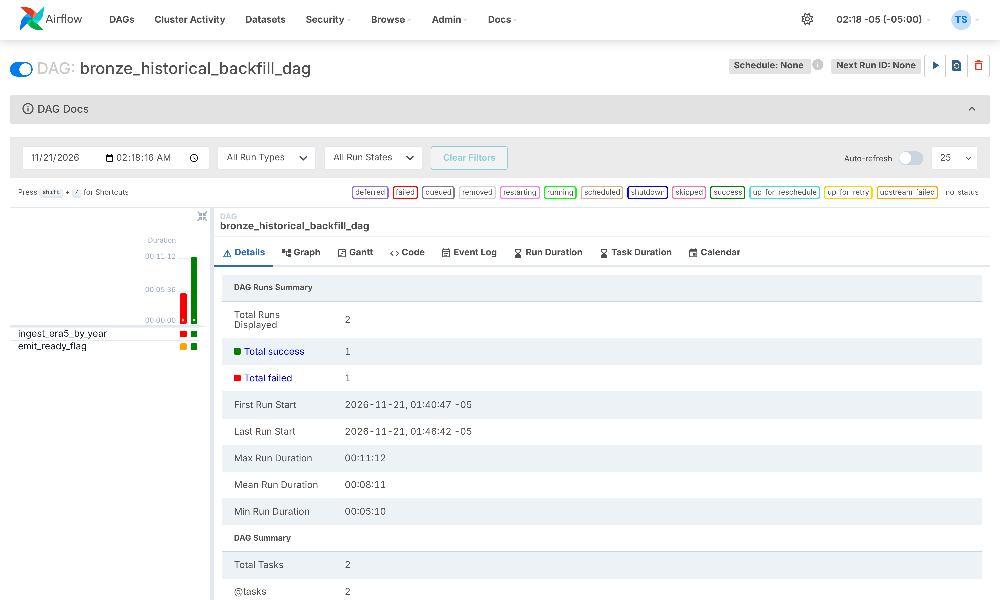
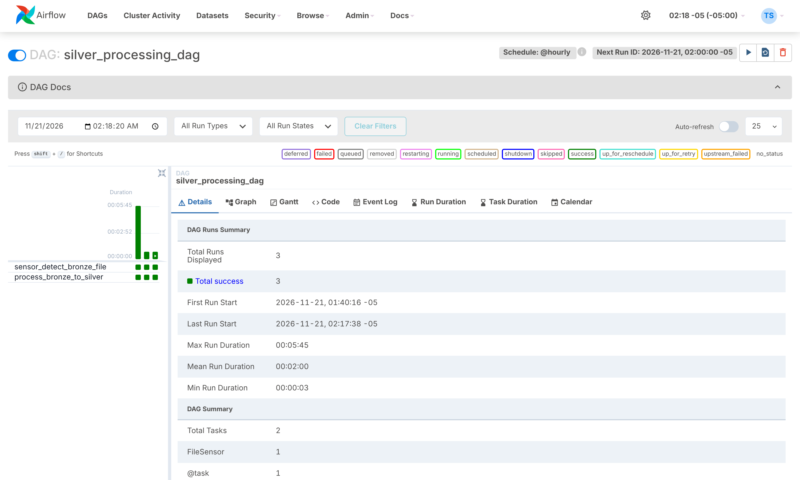
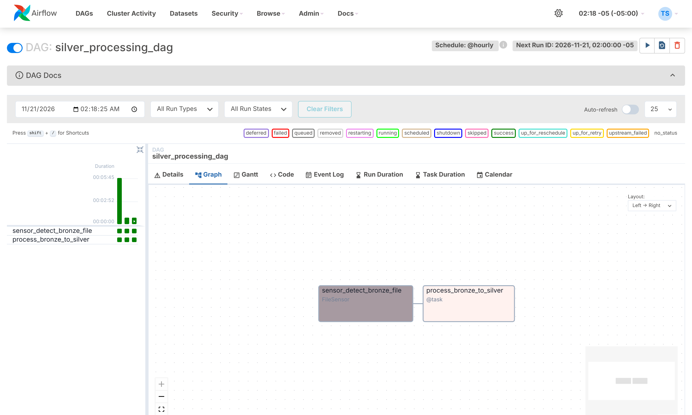
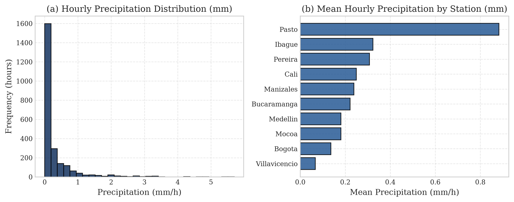
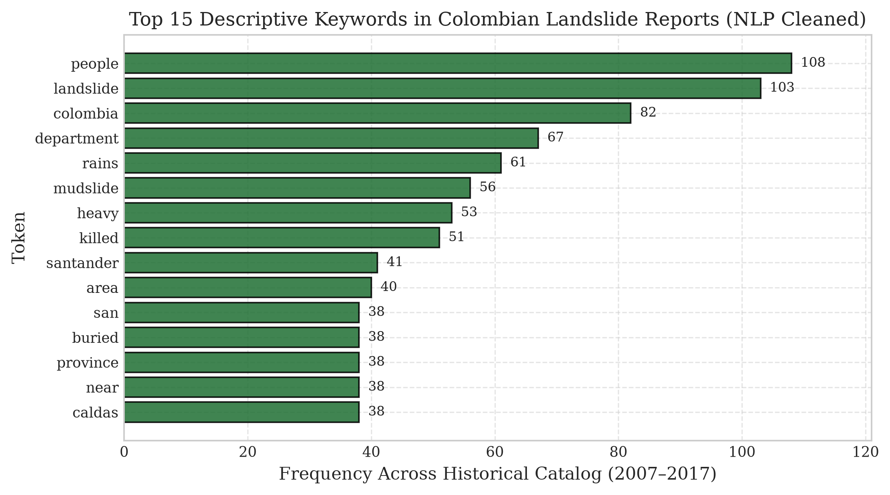

workshop_2/report/build_report.py from the
files in the repository. Section 7 lists each correction.Workshop #1 validated the open sources for monitoring rainfall-triggered landslides in Colombia and defined their ingestion contracts. Workshop #2 turns that plan into a containerized pipeline organized as a medallion architecture: raw Bronze JSON, cleaned and typed Silver Parquet, and a planned Gold layer (Workshop #3).
bronze_ingestion_dag (TaskFlow API, hourly) extracts the Open-Meteo Forecast REST API,
scrapes the NASA LHASA nowcast directory with BeautifulSoup (and reads the newest hazard raster around each monitoring
point), and loads the NASA Global Landslide Catalog; bronze_historical_backfill_dag downloads ERA5 daily rainfall
2016–2025 from the Open-Meteo archive. Payloads are validated and persisted as source_YYYYMMDD_HHMMSS.json.silver_processing_dag waits with a FileSensor for the _READY.flag written by
the Bronze DAGs, applies type/time normalization, conservative null handling, NLP text cleaning, IQR/Z-score outlier
flagging and deduplication, and writes one topic_YYYYMMDD_HHMMSS.parquet per topic and run, traceable to its
Bronze files.
| Component | Responsibility | Technology | Inputs | Outputs |
|---|---|---|---|---|
| Open-Meteo Forecast API | Hourly precipitation, rain and 0–1 cm soil moisture for 10 monitoring points (2 past days + 3 forecast days) | REST/JSON, requests with retries | HTTP GET (10 points in one call) | JSON per point |
| Open-Meteo ERA5 archive | Daily precipitation 2016–2025 for the same points (baseline for percentiles in Gold) | REST/JSON | One request per year | JSON per point and year |
| NASA LHASA portal | Discover the newest published nowcast GeoTIFF and read hazard values near each point | BeautifulSoup (HTML listing), rasterio + GDAL /vsicurl/ range reads | Directory listing HTML; GeoTIFF window | File list + station hazard stats |
| NASA Global Landslide Catalog | Historical landslide events (2007–2017) with text narratives | pandas | Catalog snapshot saved in Workshop #1 | Rows inside the Colombia box |
bronze_ingestion_dag | Extract, validate, skip unchanged payloads, persist, write _READY.flag | Airflow TaskFlow API | Sources | datalake_bronze/*.json |
bronze_historical_backfill_dag | Backfill ERA5 by year (manual, parameterized) | Airflow TaskFlow API + Params | Years | openmeteo_era5_YYYY_*.json |
| FileSensor | Start Silver processing when Bronze signals new files | FileSensor, mode='reschedule' | _READY.flag | Trigger of the processing task |
silver_processing_dag | Clean, type, flag, deduplicate and persist | pandas, PyArrow | Unprocessed Bronze files (manifest) | datalake_silver/*.parquet |
| Gold layer (planned, W#3) | 0.25° grid, antecedent rainfall, ERA5 percentiles, risk indicator | PySpark | Silver Parquet | datalake_gold/ |
| Service | Image | Role |
|---|---|---|
postgres | postgres:15-alpine | Airflow metadata database (runs, task states, XComs, users); healthcheck with pg_isready; named volume |
airflow-init | landslide-monitoring-airflow:2.9.2 (built from Dockerfile) | One-shot: migrates the database and creates the admin user, then exits |
airflow-webserver | same image | UI at http://localhost:8080 (admin / admin); healthcheck on /health |
airflow-scheduler | same image | Schedules runs and executes tasks with the LocalExecutor |
airflow-triggerer | same image | Runs deferrable operators |
The Dockerfile extends apache/airflow:2.9.2 with pandas, PyArrow, BeautifulSoup, PyYAML, NumPy and
rasterio, pinned with the official Airflow 2.9.2 constraints file so a build on another machine installs the same versions.
Mounted volumes: airflow/dags, src, config, workshop_1/samples,
datalake_bronze, datalake_silver, datalake_gold. The FileSensor connection is defined
in the environment as AIRFLOW_CONN_FS_DEFAULT='fs://?path=%2Fopt%2Fairflow%2Fdatalake_bronze': Airflow's
FSHook reads the base folder only from the path extra (see Section 7).
docker compose up -d # builds the image the first time, migrates the DB, starts the stack docker compose ps # postgres, webserver, scheduler and triggerer running/healthy # UI: http://localhost:8080 (admin / admin) → unpause the DAGs → trigger bronze_ingestion_dag
Each rule answers a problem observed in the Workshop #1 profiling. The guiding policy is that Silver never invents a value: a missing value is kept null and flagged, an impossible value is rejected and counted, and statistical extremes are flagged, never deleted, because extreme rainfall is exactly what the project monitors.
| Field | Rule | Reason |
|---|---|---|
precipitation_mm (hourly) | Required. Missing, < 0 or > 300 mm/h → row rejected and counted (rows_rejected_* in the task stats) | It is the variable the risk indicator is built on; 0 would mean "it did not rain" |
soil_moisture_m3m3 | Gaps ≤ 2 h interpolated within the station and flagged soil_moisture_imputed; longer gaps stay null | Soil moisture changes slowly hour to hour; a long gap cannot be guessed |
rain_mm | Kept as delivered (null stays null) | Informative only |
precip_24h_mm (ERA5) | Missing or negative → null + precip_24h_missing; precip_7d_mm only with 7 complete days | A partial window would understate antecedent rainfall |
fatality_count, injury_count | Nullable integers; missing stays null + fatality_missing | Filling with 0 invents "no deaths" |
country_name | Not imputed; null/empty → null + country_missing. Events labelled with another country are excluded | The bounding box also covers Ecuador, Venezuela, Panama, Peru and Brazil; the country is assigned spatially in Gold |
landslide_trigger, landslide_size, admin_division_name | Sentinel category unknown / Unknown | Already the catalog's own convention |
LHASA content_length_bytes | Null when the file was not checked with HTTP HEAD (only the 3 newest are) | 0 bytes would look like an empty upload |
All timestamps are converted to timestamp[us, tz=UTC]: Open-Meteo is requested in UTC; LHASA issue times
come from the file name (YYYYMMDDTHHMM, UTC); GLC dates are Colombian local time and are shifted +5 h
(Mocoa: 05:32 PM local → 22:32 UTC). GLC events at exactly 00:00 get is_time_unknown. Coordinates are
float64, counts nullable Int64, station and department dictionary-encoded categories. Each Parquet file stores its
schema, the list of Bronze files it was built from (bronze_source_files) and the row count in its metadata.
GLC title, description and location are concatenated and cleaned: lowercasing, Unicode accent stripping (NFD), removal of URLs, HTML tags, punctuation and digits, whitespace normalization, tokenization, and removal of English + Spanish stop words and tokens shorter than 3 characters. Stemming is not applied because most tokens are place names.
IQR (Q3 + 1.5·IQR) and Z-score (|z| > 3) are computed per station over wet hours only (precipitation > 0), because with mostly dry hours the plain IQR is 0 and every drizzle becomes an "outlier". Fatality outliers use known, non-zero counts. Results are boolean flags plus the z-score; no value is removed or clipped.
event_id for GLC..processed_manifest.json) prevents a Bronze file from being processed twice; one
Parquet file per topic and run; the writer is atomic and refuses to overwrite._bronze_source_file and the Gold layer will
use the most recent poll.bronze_ingestion_dagSchedule @hourly, catchup=False, max_active_runs=1, 2 retries (2 min) and a
10-minute execution timeout per task. Tasks: extract_weather_api → Open-Meteo; extract_lhasa_scraper
→ LHASA listing + station windows of the newest raster (daily cadence); extract_landslide_catalog → GLC
(monthly cadence); validate_and_persist → envelope and bounds checks, unchanged-payload skip, JSON write and
_READY.flag. There is no offline fallback: if a source cannot be reached the task fails and is retried, so no
made-up data reaches Bronze.
bronze_historical_backfill_dagManual (schedule=None) with parameters start_year, end_year,
force_overwrite. One request per year (cost ≈ 26 Open-Meteo units for 10 points), validation, one file per year,
years already present are skipped, then _READY.flag. Retries and a 10-minute timeout per attempt.
silver_processing_dagFileSensor(task_id="sensor_detect_bronze_file", filepath="_READY.flag", fs_conn_id="fs_default",
poke_interval=30, timeout=300, mode="reschedule", soft_fail=True)
>> process_bronze_to_silver()
The processing task consumes the flag before listing the Bronze folder (a Bronze run finishing meanwhile writes a new flag that triggers the next Silver run), dispatches each unprocessed file to its transform, concatenates the results per topic, writes the Parquet files and updates the manifest. Without a flag the sensor gives up after 5 minutes and the run is marked skipped, not failed.
docker-compose.yml;
the compose file was validated with docker compose config.| DAG | Run id | Type | State | Start (UTC) | Seconds | Tasks |
|---|---|---|---|---|---|---|
bronze_ingestion_dag | scheduled__2026-11-21T05:00:00+00:00 | scheduled | success | 2026-11-21 06:39:35 | 45 | 4 success |
silver_processing_dag | scheduled__2026-11-21T05:00:00+00:00 | scheduled | success | 2026-11-21 06:40:16 | 346 | 2 success |
bronze_historical_backfill_dag | manual__2026-11-21T06:40:46+00:00 | manual | failed | 2026-11-21 06:40:47 | 310 | 1 failed, 1 upstream_failed |
bronze_historical_backfill_dag | manual__2026-11-21T06:46:41+00:00 | manual | success | 2026-11-21 06:46:42 | 673 | 2 success (max try 2) |
bronze_ingestion_dag | scheduled__2026-11-21T06:00:00+00:00 | scheduled | success | 2026-11-21 07:00:01 | 12 | 4 success |
silver_processing_dag | scheduled__2026-11-21T06:00:00+00:00 | scheduled | success | 2026-11-21 07:00:01 | 12 | 2 success |
bronze_ingestion_dag | manual__2026-11-21T07:00:37+00:00 | manual | success | 2026-11-21 07:00:38 | 7 | 4 success |
bronze_ingestion_dag | manual__2026-11-21T07:04:49+00:00 | manual | success | 2026-11-21 07:04:50 | 45 | 4 success |
bronze_ingestion_dag | manual__2026-11-21T07:11:29+00:00 | manual | success | 2026-11-21 07:11:30 | 8 | 4 success |
bronze_ingestion_dag | manual__2026-11-21T07:17:06+00:00 | manual | success | 2026-11-21 07:17:07 | 8 | 4 success |
silver_processing_dag | manual__2026-11-21T07:17:37+00:00 | manual | success | 2026-11-21 07:17:38 | 4 | 2 success |
The first backfill run failed: an ERA5 request stayed blocked honouring a long Retry-After
header. The client now uses its own short backoff and the DAG has a timeout and retries; the second run skipped the years
already saved, and its first attempt was stopped by the timeout and completed on retry. The first Silver run used the earlier
one-file-per-Bronze-file writer, which overwrote files written within the same second (Section 7); its output was discarded
and those Bronze files were processed again by the next run.


bronze_ingestion_dag — grid view of the runs.
bronze_ingestion_dag — graph view (three extract tasks → validate_and_persist).
bronze_historical_backfill_dag — failed first run and successful retry.
silver_processing_dag — grid view.
silver_processing_dag — FileSensor → process_bronze_to_silver.16 Bronze JSON files (datalake_bronze/):
| File | Source | Content | KB |
|---|---|---|---|
nasa_glc_20261121_064020.json | nasa_glc | 150 catalog rows in the Colombia box | 254.5 |
nasa_lhasa_20261121_064020.json | nasa_lhasa | 1,088 files listed; 50 newest kept; 10 station windows | 22.7 |
openmeteo_era5_2016_20261121_064048.json | openmeteo_era5 | 10 points × 366 days (2016) | 144.5 |
openmeteo_era5_2017_20261121_064048.json | openmeteo_era5 | 10 points × 365 days (2017) | 143.9 |
openmeteo_era5_2018_20261121_064048.json | openmeteo_era5 | 10 points × 365 days (2018) | 144.1 |
openmeteo_era5_2019_20261121_064048.json | openmeteo_era5 | 10 points × 365 days (2019) | 144.0 |
openmeteo_era5_2020_20261121_064048.json | openmeteo_era5 | 10 points × 366 days (2020) | 144.3 |
openmeteo_era5_2021_20261121_064643.json | openmeteo_era5 | 10 points × 365 days (2021) | 144.2 |
openmeteo_era5_2022_20261121_064643.json | openmeteo_era5 | 10 points × 365 days (2022) | 144.2 |
openmeteo_era5_2023_20261121_065745.json | openmeteo_era5 | 10 points × 365 days (2023) | 144.0 |
openmeteo_era5_2024_20261121_065745.json | openmeteo_era5 | 10 points × 366 days (2024) | 144.4 |
openmeteo_era5_2025_20261121_065745.json | openmeteo_era5 | 10 points × 365 days (2025) | 144.2 |
openmeteo_forecast_20261121_064020.json | openmeteo_forecast | 10 points × 120 h | 99.2 |
openmeteo_forecast_20261121_070009.json | openmeteo_forecast | 10 points × 120 h | 99.2 |
openmeteo_forecast_20261121_071138.json | openmeteo_forecast | 10 points × 120 h | 99.2 |
openmeteo_forecast_20261121_071715.json | openmeteo_forecast | 10 points × 120 h | 99.2 |
5 Silver Parquet files (datalake_silver/), lineage read from each file's metadata; 16 Bronze files are recorded in the manifest:
| File | Rows | Cols | KB | Built from |
|---|---|---|---|---|
landslides_20261121_070012.parquet | 109 | 46 | 170.4 | nasa_glc_20261121_064020.json |
lhasa_hazard_20261121_070012.parquet | 10 | 13 | 10.7 | nasa_lhasa_20261121_064020.json |
rainfall_20261121_070012.parquet | 2,400 | 16 | 99.8 | openmeteo_forecast_20261121_064020.json, openmeteo_forecast_20261121_070009.json |
rainfall_20261121_071742.parquet | 2,400 | 16 | 100.2 | openmeteo_forecast_20261121_071138.json, openmeteo_forecast_20261121_071715.json |
rainfall_historical_20261121_070012.parquet | 36,530 | 14 | 2,546.9 | 10 files: openmeteo_era5_2016_20261121_064048.json … openmeteo_era5_2025_20261121_065745.json |
openmeteo_forecast_20261121_071715.json){
"metadata": {
"source_id": "openmeteo_forecast",
"source_name": "Open-Meteo Forecast & Recent API",
"query_timestamp_utc": "2026-11-21T07:17:09.245841+00:00",
"locations_count": 10,
"past_days": 2,
"forecast_days": 3,
"http_status_code": 200,
"rate_limit_cost": "10.0",
"payload_sha256": "d65ef6c7859f352d…"
},
"data": [
{
"location_name": "Bogota",
"department": "Cundinamarca",
"requested_latitude": 4.6097,
"requested_longitude": -74.0817,
"returned_latitude": 4.674868,
"returned_longitude": -74.11331,
"elevation_m": 2582.0,
"hourly_units": {"time": "iso8601", "precipitation": "mm", "rain": "mm", "soil_moisture_0_to_1cm": "m\u00b3/m\u00b3"},
"hourly": {"time": ["2026-11-19T00:00", "2026-11-19T01:00", "2026-11-19T02:00", …], "precipitation": [0.1, 0.0, 0.0, …], "rain": [0.0, 0.0, 0.0, …], "soil_moisture_0_to_1cm": [0.146, 0.147, 0.147, …]}
},
… 9 more points
]
}
| Topic | Result (computed from the Silver files) |
|---|---|
rainfall | 4,800 rows from 4 forecast polls (10 points × 120 h each); 0 null precipitation; 0 soil-moisture values interpolated; 2,214 wet hours; 150 IQR flags and 50 Z-score flags (3.1% / 1.0% of rows); maximum 6.1 mm/h at Medellin, 2026-11-22 20:00 UTC (forecast) |
rainfall_historical | 36,530 station-days 2016-01-01 → 2025-12-31 from 10 yearly files; 0 missing days; wettest mean Manizales (18.8 mm/day), driest Bogota (2.5 mm/day); daily maximum 211.8 mm (Villavicencio, 2017-07-02); 600 null 7-day sums (first 6 days of each yearly file) |
landslides | 109 events kept from the box (101 Colombia, 8 without country, foreign-labelled events excluded); 70 with unknown time; 5 without fatality count (kept null); 7 fatality IQR flags (max 329, Mocoa 2017); 6,004 tokens |
lhasa_hazard | 10 station windows of raster 2026-11-19; highest lhasa_max 0.308 at Pasto; 0 stations ≥ 0.5 |

rainfall_20261121_071742.parquet, all polls it contains): distribution of hourly precipitation and mean by station.Mean hourly precipitation by station (all polls): Pasto 0.92, Ibague 0.34, Pereira 0.33, Manizales 0.26 mm/h.

The catalog is written in English, so the most frequent tokens are English words: people (108), landslide (103), said (83), colombia (82), department (67), rains (61), mudslide (56), heavy (53).
rainfall — wettest hours of Medellin in the poll that contains the maximum:
| station_name | timestamp | precipitation_mm | soil_moisture_m3m3 | precip_outlier_iqr | precip_outlier_zscore | precip_zscore | _bronze_source_file |
|---|---|---|---|---|---|---|---|
| Medellin | 2026-11-22 20:00 | 6.1 | 0.394 | True | True | 5.843 | openmeteo_forecast_20261121_064020.json |
| Medellin | 2026-11-19 17:00 | 2.3 | 0.338 | True | False | 1.859 | openmeteo_forecast_20261121_064020.json |
| Medellin | 2026-11-20 20:00 | 1.6 | 0.386 | True | False | 1.125 | openmeteo_forecast_20261121_064020.json |
| Medellin | 2026-11-20 21:00 | 1.0 | 0.390 | False | False | 0.496 | openmeteo_forecast_20261121_064020.json |
landslides — Mocoa 2017 (no country in the catalog, kept null and flagged) and the El Tambo pair 3352/3353:
| event_id | event_date | timestamp_utc | is_time_unknown | country_name | country_missing | fatality_count | fatality_outlier_iqr | token_count |
|---|---|---|---|---|---|---|---|---|
| 3353 | 04/11/2011 12:00:00 AM | 2011-04-11 05:00 | True | Colombia | False | 5 | False | 56 |
| 3352 | 04/11/2011 08:00:00 AM | 2011-04-11 13:00 | False | Colombia | False | 0 | False | 32 |
| 10790 | 03/25/2017 05:32:00 PM | 2017-03-25 22:32 | False | null | True | 329 | True | 47 |
lhasa_hazard — three highest station windows:
| station_name | nominal_issue_time | valid_pixel_count | lhasa_max | lhasa_mean | lhasa_p90 | has_high_hazard |
|---|---|---|---|---|---|---|
| Pasto | 2026-11-19 00:00 | 876 | 0.308 | 0.084 | 0.162 | False |
| Medellin | 2026-11-19 00:00 | 830 | 0.169 | 0.058 | 0.114 | False |
| Manizales | 2026-11-19 00:00 | 898 | 0.100 | 0.015 | 0.027 | False |
rainfall_historical — ERA5 baseline per station (mm/day):
| station_name | mean_daily | p95_daily | max_daily | max_7d |
|---|---|---|---|---|
| Manizales | 18.8 | 55.5 | 161.5 | 619.4 |
| Bucaramanga | 11.7 | 38.8 | 177.9 | 383.3 |
| Mocoa | 11.7 | 40.4 | 181.1 | 490.3 |
| Pereira | 11.5 | 41.3 | 125.7 | 484.8 |
| Villavicencio | 11.2 | 39.9 | 211.8 | 403.8 |
| Ibague | 11.1 | 34.8 | 71.8 | 323.6 |
| Pasto | 9.9 | 29.5 | 75.0 | 223.3 |
| Cali | 9.2 | 28.4 | 93.6 | 242.5 |
| Medellin | 6.1 | 18.5 | 70.0 | 150.3 |
| Bogota | 2.5 | 10.8 | 51.7 | 127.9 |
era5 model (nearest 0.25° cell) returns practically the same total, so the value
comes from the reanalysis itself, a coarse grid over very steep terrain, not from our code.
Silver keeps the values as delivered (nothing is invented or removed); the Gold layer will compare station-year totals
against the multi-year distribution of each cell and exclude anomalous years from the percentile baseline.Annual ERA5 totals (mm):
| station_name | 2016 | 2017 | 2018 | 2019 | 2020 | 2021 | 2022 | 2023 | 2024 | 2025 |
|---|---|---|---|---|---|---|---|---|---|---|
| Bogota | 1112 | 1045 | 880 | 905 | 743 | 811 | 1005 | 764 | 856 | 1053 |
| Bucaramanga | 7179 | 3041 | 3836 | 3349 | 5076 | 4604 | 4837 | 3282 | 3636 | 4063 |
| Cali | 3285 | 3362 | 3700 | 3775 | 3652 | 3936 | 3735 | 3012 | 2406 | 2878 |
| Ibague | 1655 | 3764 | 3999 | 3375 | 2983 | 4118 | 5260 | 4982 | 5223 | 5178 |
| Manizales | 17122 | 4931 | 6225 | 5600 | 6314 | 6675 | 6491 | 5511 | 4394 | 5479 |
| Medellin | 2702 | 2078 | 2106 | 1922 | 2198 | 2258 | 2686 | 1983 | 2176 | 2194 |
| Mocoa | 2618 | 3449 | 4783 | 4682 | 2887 | 4332 | 3963 | 4516 | 4930 | 6736 |
| Pasto | 2314 | 3530 | 3374 | 3390 | 3230 | 4606 | 4487 | 3457 | 3535 | 4147 |
| Pereira | 14500 | 2612 | 2492 | 2296 | 2458 | 3078 | 3780 | 3240 | 3393 | 4111 |
| Villavicencio | 2066 | 5290 | 5728 | 5048 | 3466 | 3839 | 3478 | 3594 | 3928 | 4580 |
pytest tests/: 16 passed (3 Workshop #1 + 13 Workshop #2), run with pandas 2.1.4 / Airflow 2.10.5 and with pandas 3.1. The Workshop #2 tests cover the API client, the scraper, Bronze validation,
NLP cleaning, both outlier methods (with and without zero exclusion), the four transforms, the unknown-time flag, the
rejection of missing/impossible rainfall, the soil-moisture gap rule, and that missing countries and fatality counts are
not imputed. Tests that call a live source are skipped when there is no network.
| Problem found | Cause | Correction |
|---|---|---|
| The FileSensor never detected the Bronze flag inside Docker | AIRFLOW_CONN_FS_DEFAULT='fs:///opt/airflow/datalake_bronze' puts the folder in the URI path, which FSHook ignores (base path = '') | Connection given as fs://?path=%2Fopt%2Fairflow%2Fdatalake_bronze (verified with Airflow's Connection parser) |
First version: sensor on filepath="." | The folder always exists, so the sensor never waited | Sensor on _READY.flag, written only when new Bronze files exist; flag consumed before listing to avoid losing a concurrent batch |
| Silver files silently overwritten | One Parquet per Bronze file named to the second: 5 ERA5 years processed in the same second produced 2 files | One Parquet per topic and run; atomic writer that refuses to overwrite |
| Invented values in Silver | fillna(0) on precipitation, fatalities and injuries; null country set to "Colombia" | Missing values kept null and flagged; impossible/missing rainfall rejected and counted (Section 4.1) |
| Invented data in Bronze when a source failed | Scraper fell back to a hard-coded HTML listing, and to a Workshop #1 sample raster labelled with today's date | Fallbacks removed: the task fails and Airflow retries (2 retries, 10-min timeout) |
| Duplicated Bronze/Silver data | Every run re-wrote identical payloads (e.g. the static GLC snapshot) | Unchanged payloads (same SHA-256) are not persisted; daily/monthly cadence for LHASA/GLC |
| Implausible ERA5 annual total for one cell | Reanalysis bias over steep terrain (verified directly against the API) | Kept as delivered and documented; to be screened in Gold before computing percentiles |
| ERA5 backfill blocked for minutes | urllib3 honoured a long Retry-After on HTTP 429 | Own short backoff; Airflow retries and execution timeout |
| Precipitation outliers meaningless | IQR over all hours: with most hours dry, any rain was flagged | Per-station, wet-hours-only IQR and Z-score |
workshop_2/ missing from the repository | .gitignore had Workshop_2/; Git on Windows ignores case, so it also hid workshop_2/ | Entry removed; report, figures and screenshots versioned in workshop_2/ |
| Report figures not matching the data | Numbers written by hand (e.g. token frequencies, outlier percentages, hashes of files not in the repository) | Report generated by build_report.py from the committed files and the exported Airflow run history |
| Docker images not reachable from the development machine | Network policy | Runs executed with Airflow installed with pip on the same code; compose file validated |
The pipeline ingests four live sources into an immutable Bronze layer and produces typed, flagged and traceable Silver tables without inventing values. For Workshop #3 the Gold layer (PySpark) will read all Silver files, keep the most recent forecast poll per station-hour, assign GLC events to Colombia spatially, compute 24 h / 7 d antecedent rainfall and ERA5 percentiles per station, combine them with the LHASA hazard values, and produce the landslide risk indicator.